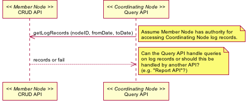

Summary
A Member Node should be able to request use information for any objects for which that Member Node is the origin (or defacto origin in the case where the original MN was decommissioned).
Actors
- Coordinating Node
- Member Node
Preconditions
- Aggregate logs are accumulated by CNs
Triggers
- MN Administrator requests aggregate logs
- Timed event
Post Conditions
- Aggregate log information is available to the Member Node
This operation should really be a function for the administrative functions of the Investigator Toolkit. It is reasonable to expect that (especially for the first iteration of the infrastructure) MN administrators will want to peruse and evaluate the log data. In later stages, this information could be associated with content, so use statistics appear with search results.